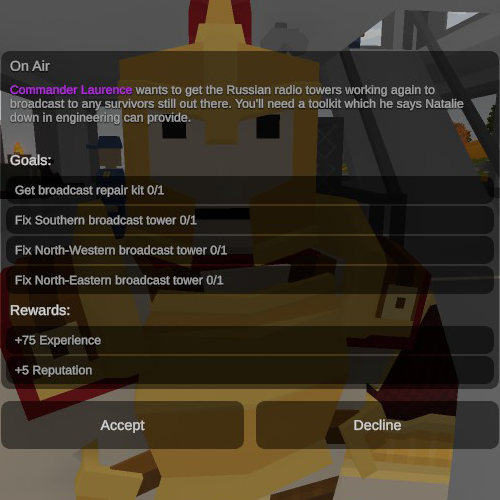
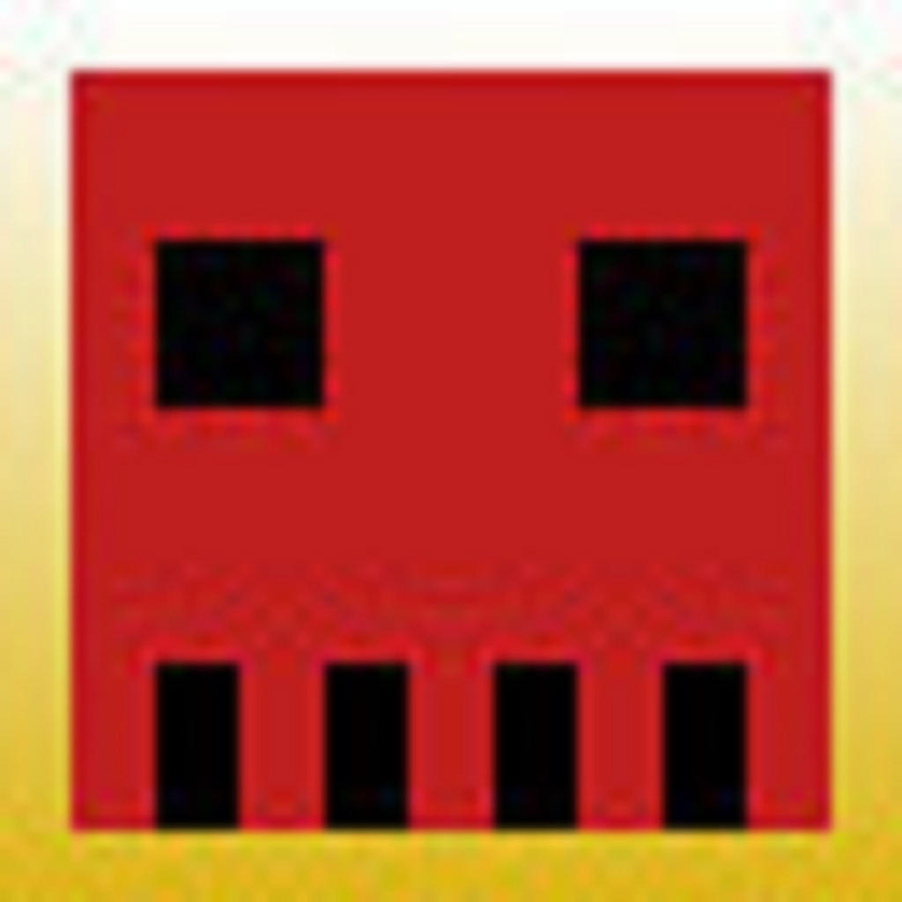
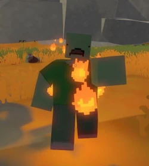

Ülesandeid on palju Unturned'is, seetõttu on vahest raske pidada jälge nendega.

Ülesandeid saab leida "NPC"-delt, kuid mõningatel tasaditel puudub need. Et ülesannet saada on vaja suhelda NPC'dega, ülesanne koosneb kas asja tagastamises, asja koostamises, asja omamises või surnu bossi tapmine. Kui ülesande vajatud asjad on tehtud peab rääkima taas tegelsaega kes andis ülesande. Ülesande eest saab kogemuspunkte ja reputatsiooni.

Reputatsioone on mitu - halva poole ning hea poole. Head on - "Vigilante", "Constable", "Deputy", "Sheriff" ja "Paragon" ning halvad on - "Thug", "Outlaw", "Gangster", "Bandit" ja "Villain". Et saada positiivset reputatsiooni on vaja teha ülesandeid ja aidata kaasmängjaid. Et saada halba reputatsiooni on vaja tappa kaasmängjaid. Mõlemad tipp astmed ("Paragon" ja "Villain") annavad "achievement".

Paaris ülesandes on surnu bossid ning nad on väga tugevad ja raske ära tappa. Need tüübid on - "Groundpounder", "Flamethrower", "Lightningstrike" ja "Nuclear Spitter". Kõigil on erivõimed - Groundpounder hüppa maa sisse ning tekidab maavärinaid. Flamethrower sülitab tuld. Lightningstrike laseb ohtlike elektri sähvatusi. Nuclear Spitter sülitab radioaktiivset materjalle. Ning on paar mis koosneb mitmest nendest võimetest. Peamislet need esinevad paaris "Russia" ülesannetes ja radioaktiivsed surnu aladel.